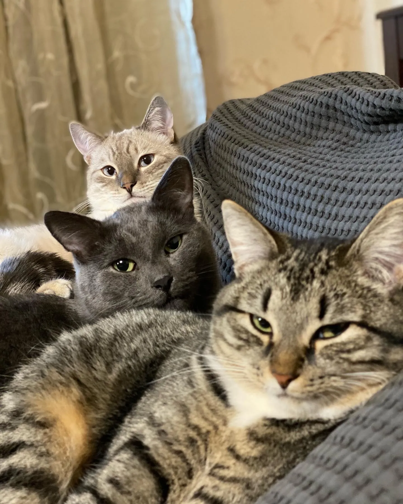
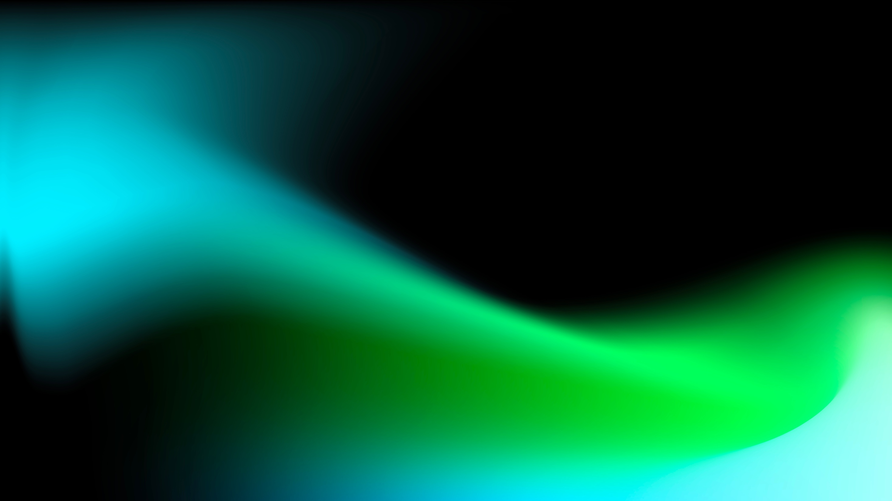
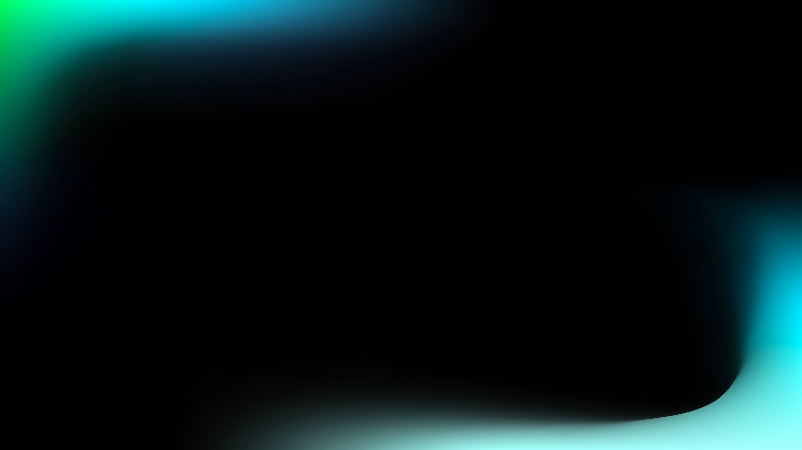

HTML × графика
HTML-in-Canvas:
Собираем редактор постера
Анна Расторгуева
PLATFORM / 2026 HTMLCANVAS Текст
остаётся HTML.
Представьте: у нас есть небольшой графический редактор. Мы уже умеем рисовать фон, картинки
и фигуры. И тут приходит задача: добавьте текст. Чтобы можно было менять слова, выделять их, делать переносы и
сохранять результат в картинку. Звучит как обычная работа для браузера. Но наш редактор рисует всё в canvas, и
внезапно задача становится гораздо больше, чем казалась.
Сегодня разберём HTML-in-Canvas — API, который позволяет использовать свёрстанный HTML внутри графического
холста. Пройдём весь путь на одном примере: соберём постер с редактируемым текстом. Посмотрим, какую работу
браузер возьмёт на себя и где нам всё равно придётся разбираться самим.
Знакомство
Обо мне
Fullstack из Сбера
В профессии 7 лет
Люблю котиков

Для начала немного обо мне. Меня зовут Анна Расторгуева. Я Fullstack-разработчик из Сбера,
в профессии семь лет. И, как можно понять по этому слайду, люблю котиков.
В этом докладе мне интересно посмотреть на новую возможность браузера через конкретную задачу. Не только
запустить красивый эффект, а понять: зачем это может понадобиться в работе и что произойдёт, когда
пользователь начнёт нажимать кнопки и редактировать текст. Поэтому дальше будем постепенно собирать один
небольшой редактор.
01 / Задача
Один постер. Две модели.
01
DOM
Содержимое, CSS-вёрстка, ввод.
02
Canvas
Координаты, слои, пиксели.
03
Редактор
Пользователь ожидает всё сразу.
Нужно ли нам создавать собственный текстовый движок?
В нашем постере встречаются два привычных способа делать интерфейс.
Первый — HTML и CSS. Мы описываем содержимое, задаём стили, а браузер решает, как расположить текст и где
перенести строку. Если это поле ввода, он ещё и помогает с редактированием.
Второй — canvas. Здесь мы говорим: нарисуй фигуру в этих координатах, потом картинку, потом текст. У нас
больше контроля над общей картинкой, но многие привычные возможности уже не появляются сами собой.
Пользователю эта разница неинтересна. Он хочет взять надпись, повернуть её, исправить слово и скачать постер.
Вот и попробуем совместить эти ожидания. Полную Figma делать не будем — возьмём одну небольшую, но
показательную задачу.
01 / Задача
План доклада
01
Зачем нужен API
Редактор, альтернативы, цена текста.
02
Как он работает
DOM → paint → canvas → ввод.
03
Где его границы
Экспорт, 3D, стоимость, внедрение.
Сначала разберём, зачем вообще понадобилось это API. Ведь текст уже можно написать в HTML,
а графику — нарисовать в canvas.
Потом посмотрим на код: как подготовить HTML, когда браузер разрешает его рисовать и как разместить текст в
нашей сцене.
А дальше начнётся самое интересное: ввод, перекрытия, экспорт и производительность. То есть всё, что отличает
красивую картинку от работающего интерфейса.
По дороге три раза вернёмся к одному демо. Сначала соберём постер, потом проверим неудобные случаи и в конце
попробуем сохранить результат.
01 / Задача
Figma: проблема уже существует
Графический холст использует собственный рендерер.
Отрисовка сцены через WebGL / WebGPU.
Браузер не получает семантику из нарисованных пикселей.
Доступность приходится проектировать отдельно.
Наш прототип исследует ту же категорию задач.
Для примера далеко ходить не нужно. У Figma есть графический холст, на котором пользователь
работает с текстом, фигурами и изображениями. Команда использует собственный рендерер и рассказывала о переходе
к WebGPU.
При таком подходе браузер видит итоговую графику. Из самих пикселей он не узнает, что перед ним заголовок,
кнопка или редактируемый текст. Поэтому привычные возможности, в том числе доступность, приходится отдельно
связывать с содержимым редактора.
Это не значит, что Figma нужно срочно переписать на HTML-in-Canvas. У неё свои требования, например к
одинаковому отображению макетов. Но сам класс проблемы очень реальный. Нам нужна общая графическая сцена, а
внутри неё — возможности обычного HTML. На меньшем примере мы как раз и исследуем эту задачу.
01 / Задача
Техническое задание на демо
Фон и фигуры.
Текст с оформлением и переносами.
Ширина, позиция и поворот.
Редактирование и экспорт PNG.
Без таймлайна, сервера и совместной работы.
PLATFORM / 2026 HTMLCANVAS Текст
остаётся HTML.
Вот наше техническое задание. Делаем редактор постера: фон, несколько фигур и один
текстовый блок. В тексте можно выделить часть слов цветом. У блока можно менять ширину, положение и угол
поворота. В конце весь постер должен сохраниться в PNG.
Обратите внимание на последнее требование. Недостаточно просто красиво показать текст поверх картинки. Он
должен стать частью того файла, который получит пользователь.
Сложную панель инструментов мы делать не будем. Для положения и угла хватит ползунков. Так мы не потратим
половину доклада на устройство редактора и сможем сосредоточиться на самом API. А для ввода отдельно
проверим, что происходит, когда текст уже повёрнут или частично закрыт фигурой.
01 / Задача
Попробуем обычный Canvas 2D
ctx.font = 'bold 48px sans-serif';
ctx.fillStyle = '#7df5d1';
ctx.fillText('Встречаемся в браузере', 80, 140);
// А где переносы, смешанные стили,
// выделение и редактирование?Один вызов рисует строку. Интерфейс требует большего.
Начнём с самого очевидного решения. У Canvas 2D есть метод fillText. Задаём шрифт, цвет,
координаты — и получаем надпись.
Для простой подписи этого вполне достаточно. Например, чтобы показать число на графике или название рядом с
объектом.
Но теперь у нас абзац. Одно слово зелёное, другое белое. Пользователь уменьшает ширину блока, и текст должен
перенестись. Затем он хочет поставить курсор между буквами, выделить слово и заменить его.
Вызов fillText сам по себе всего этого не добавляет. Нужно решить, как разбить текст на строки, где находятся
его части и как будет работать редактирование. Браузер умеет рисовать буквы, но готовый текстовый блок с
поведением редактора из одной команды не получается. Вот здесь небольшая задача начинает расти.
01 / Задача
Второй путь: HTML поверх холста
<div class="workspace">
<canvas id="scene"></canvas>
<div class="text-layer" contenteditable="true">
Встречаемся <strong>в браузере</strong>
</div>
</div>Рабочее решение, пока композиция допускает отдельный DOM-слой.
Есть и другое решение: оставим текст обычным HTML и положим его поверх canvas. На слайде
именно такая разметка. Рядом с холстом находится редактируемый div.
Это вполне рабочий подход. Для формы или панели инструментов я бы с него и начинала. Браузер сам покажет
текст, обработает фокус и поможет с вводом.
Но в нашем постере текст должен участвовать в общей композиции. Например, быть поверх фонового круга, но под
другой фигурой. А ещё двигаться вместе со сценой и попадать в сохранённую картинку.
Часть этих задач можно решить и с отдельным HTML-слоем. Просто тогда нам нужно поддерживать связь между двумя
способами отображения. Давайте посмотрим, где именно появляется дополнительная работа.
01 / Задача
Где возникает цена интеграции
01
Порядок
Текст должен быть между фигурами.
02
Геометрия
Масштаб и поворот должны совпадать.
03
Экспорт
PNG должен включать весь постер.
canvas.toBlob() не захватывает соседний DOM.
Первое — порядок слоёв. Мы хотим, чтобы одна фигура была за текстом, а другая перед ним.
Отдельный HTML поверх одного canvas не вклинивается между командами его рисования. Для этого уже нужно менять
устройство композиции.
Второе — координаты. Холст масштабируется или перемещается, и HTML должен точно следовать за ним. Всё это
можно написать, но это отдельная логика.
И третье — экспорт. Если вызвать у canvas метод toBlob, мы получим его изображение. Соседний div туда не
попадёт, даже если на экране они выглядят как один постер.
Можно собирать экспорт отдельно, в браузере или на сервере. Но тогда появляется ещё одна реализация той же
картинки. Именно здесь хочется попросить браузер: дай мне использовать уже свёрстанный текст прямо в общей
сцене.
01 / Задача
Что меняет HTML-in-Canvas
HTML становится источником для рисования.
ctx.drawElementImage(title, 80, 120);Текст описан DOM. Его внешний вид участвует в сцене.
HTML-in-Canvas как раз даёт такую возможность. Мы готовим HTML-элемент, а затем передаём
его в команду рисования. На слайде это drawElementImage: нарисовать изображение элемента в заданной точке.
Содержимое при этом остаётся описано в HTML. Мы не переписываем вручную правила переноса строк и оформления
каждого слова. Браузер подготавливает внешний вид элемента, а мы используем его в своей композиции.
Но тут есть условия. Нельзя взять любой кусок любой страницы и считать, что он сразу станет подходящим
источником. Элемент нужно подготовить, разместить в нужном месте и дождаться момента, когда его можно
рисовать.
Сейчас пройдём эти шаги. Сначала разметка, потом стили, потом первый кадр. В результате за этим коротким
вызовом будет понятная последовательность действий.
02 / Новое API
Зафиксируем версию API
// Актуальная модель в explainer:
<canvas content="drawable">
<article drawable>...</article>
</canvas>
// В старых статьях встречается layoutsubtree.Примеры разных поколений нельзя механически смешивать.
Прежде чем копировать код, нужно разобраться с версиями. В старых статьях про
HTML-in-Canvas вы встретите атрибут layoutsubtree. В модели, которую мы разбираем сегодня, используются content
со значением drawable у canvas и отдельный drawable у элемента.
Менялась не только разметка. Менялся и способ сообщить браузеру, где находится нарисованный элемент. Поэтому
взять HTML из одной статьи, а JavaScript из другой — не всегда хорошая идея. По отдельности оба примера
могут быть правильными, но относиться к разным версиям API.
Здесь я опираюсь на модель из актуального explainer, ссылка есть на слайде. Перед использованием в проекте
нужно сверить её с той реализацией браузера, в которой будет работать приложение.
02 / Новое API
Проверяем нужные возможности
const native =
'drawElementImage' in CanvasRenderingContext2D.prototype &&
'requestPaint' in HTMLCanvasElement.prototype &&
'updateElementGeometry' in HTMLCanvasElement.prototype;
if (!native) showFallback();Наличие методов — первый фильтр. Затем проверяем реальную отрисовку.
Начинаем с проверки возможностей. Вместо того чтобы угадывать по названию браузера,
смотрим, есть ли нужные нам методы.
Первый рисует элемент. Второй позволяет попросить новый кадр. Третий нужен для работы с геометрией элемента —
к ней мы ещё вернёмся.
Но такая проверка отвечает только на вопрос: существуют ли эти методы? Она не доказывает, что все детали
работают именно так, как мы ожидаем. Поэтому в демо после неё есть ещё попытка реальной отрисовки.
Если подходящей поддержки нет, показываем обычный HTML-просмотр. При этом честно отключаем возможности,
которых в таком режиме нет. Например, экспорт общей композиции. Пользователь должен понимать, что ему
доступно, а не выяснять это по кнопке, которая ничего не делает.
02 / Новое API
Подготавливаем HTML
<canvas id="poster" content="drawable">
<article id="title" drawable
contenteditable="true"
role="textbox" aria-multiline="true"
aria-label="Заголовок постера">
Встречаемся <strong>в браузере</strong>
</article>
</canvas>Один drawable — одна управляемая часть композиции.
Теперь подготовим сам текст. Внутри canvas находится article. Это наш заголовок
постера.
Атрибут content со значением drawable у холста включает специальный режим для его содержимого. А drawable у
article отмечает элемент, который мы хотим использовать для рисования.
Внутри обычный HTML: текст и strong для выделенной части. Contenteditable добавляет возможность редактировать
содержимое. Подпись через aria-label объясняет, что это за поле, а aria-multiline указывает, что в нём может
быть несколько строк.
Уже здесь можно заметить пользу подхода: у нас остаётся настоящий элемент со структурой и назначением. Но
полноценный текстовый редактор это пока не делает. Например, сохранение форматирования, вставку и историю
изменений всё равно нужно продумывать отдельно. Для первого эксперимента этого небольшого блока нам
достаточно.
02 / Новое API
Вёрстку оставляем CSS
#title {
box-sizing: border-box;
width: 420px;
padding: 20px;
font: 700 44px/1.1 sans-serif;
color: white;
overflow-wrap: anywhere;
}
#title strong { color: #7df5d1; }Со стилями всё гораздо привычнее. Указываем ширину, внутренние отступы, шрифт и цвет. Для
strong задаём другой цвет. Длинным словам разрешаем переноситься, чтобы они не вылезали за границы блока.
Эту работу выполняет обычная CSS-вёрстка. Нам не нужно самостоятельно вычислять позицию каждого слова, чтобы
получить абзац нужной ширины.
И здесь же видна будущая цена. Если мы меняем ширину, браузер должен заново решить, где будут переносы и
какой высоты станет блок. HTML-in-Canvas не отменяет эту работу, он позволяет использовать её результат.
То есть мы получаем удобство браузерной вёрстки вместе с её обычными затратами. Это пригодится нам чуть
позже, когда будем говорить о производительности.
02 / Новое API
Размер CSS ≠ размер bitmap
const W = 960, H = 540;
const dpr = window.devicePixelRatio || 1;
canvas.width = Math.round(W * dpr);
canvas.height = Math.round(H * dpr);
// В CSS: canvas { width: 960px; height: 540px; }
// Рисуем в логических координатах W × H.Плотность пикселей влияет и на чёткость, и на память.
Перед первым кадром разберём одну особенность canvas. У него есть размер на странице и
размер изображения, в которое мы рисуем. Эти размеры могут отличаться.
Например, наш постер занимает девятьсот шестьдесят на пятьсот сорок CSS-пикселей. Но на экране с высокой
плотностью на каждый такой пиксель может приходиться несколько физических пикселей. Если изображение слишком
маленькое, при показе оно растянется и будет выглядеть размыто.
Поэтому здесь мы умножаем ширину и высоту изображения на devicePixelRatio. А при рисовании настроим масштаб
так, чтобы по-прежнему пользоваться удобными координатами постера.
В этом примере размер сцены фиксирован. Для изменяемого размера понадобилось бы отслеживать ещё и размеры
самого холста. Главное сейчас — не путать размер элемента на странице с разрешением его картинки.
02 / Новое API
Первый кадр: ждём paint
const ctx = canvas.getContext('2d');
canvas.addEventListener('paint', () => {
ctx.reset();
ctx.scale(dpr, dpr);
ctx.fillStyle = '#102b26';
ctx.fillRect(0, 0, W, H);
ctx.drawElementImage(title, 80, 120, boxW, boxH);
});
canvas.requestPaint();boxW / boxH — размеры HTML-блока из ResizeObserver.
Вот первый полный проход рисования. Сначала получаем обычный контекст Canvas 2D.
Потом подписываемся на paint. Это событие говорит нам, что браузер подготовил содержимое, с которым можно
работать. Просто вызвать рисование сразу после создания HTML — слишком рано: нужного снимка ещё может не
быть.
Внутри обработчика сначала сбрасываем контекст. Затем задаём масштаб с учётом плотности пикселей. Рисуем фон
прямоугольником и поверх него — наш HTML-элемент.
У drawElementImage здесь указаны координаты и размеры блока. Ширину и высоту мы получим из ResizeObserver, до
него скоро дойдём.
Последняя строка просит браузер прислать paint. Весь пример устроен довольно просто: дождались готового
содержимого, очистили предыдущую картинку и собрали новую. Но именно ожидание paint отличает этот код от
попытки нарисовать ещё не подготовленный элемент.
03 / Как браузер рисует
Путь одного изменения
DOM + CSS → Layout → Снимок
команд → paint → Canvas
Браузер готовит содержимое. Приложение собирает сцену.
Давайте проследим, что происходит до нашего обработчика. Допустим, пользователь изменил
текст.
Сначала браузер видит изменения в HTML и стилях. Потом рассчитывает расположение содержимого: ширину блока,
переносы строк, высоту. Этот этап называется layout.
После этого он подготавливает команды, которые описывают внешний вид элемента. В документации результат
называют снимком. Здесь полезно не представлять себе обязательное создание PNG на каждом кадре. Речь о
подготовленном представлении отрисовки; как именно выполнить его эффективно, решает браузер.
Дальше приходит paint, и уже наш код использует этот результат в canvas. Например, кладёт текст поверх
фоновой картинки.
Так обязанности разделяются довольно понятно. Браузер знает, как сверстать элемент. Приложение знает, куда
поставить его в общей сцене и что ещё нарисовать рядом.
03 / Как браузер рисует
DOM меняется до отрисовки
widthControl.addEventListener('input', () => {
title.style.width = `${widthControl.value}px`;
});
new ResizeObserver(([entry]) => {
const box = entry.borderBoxSize[0];
boxW = box.inlineSize;
boxH = box.blockSize;
canvas.requestPaint();
}).observe(title);ResizeObserver сохраняет геометрию, paint использует её.
Теперь добавим ползунок ширины. В его обработчике мы меняем CSS-свойство width у заголовка.
Это обычное изменение DOM, которое браузер обработает при обновлении страницы.
Отдельно ResizeObserver сообщает нам новый размер блока. Мы сохраняем ширину и высоту, а потом просим
перерисовать сцену. Эти значения и попадут в drawElementImage.
Почему не читать размер прямо после каждой записи стиля? Одно такое чтение не означает катастрофу. Но если в
большом цикле постоянно чередовать изменение стилей и запрос размеров, браузеру может понадобиться снова и
снова пересчитывать расположение элементов.
Здесь мы пользуемся готовым уведомлением об изменении размера. В одном месте меняем ширину, в другом получаем
результат, а в paint используем уже сохранённые числа.
03 / Как браузер рисует
Ошибка: менять DOM внутри paint
canvas.addEventListener('paint', () => {
title.textContent = 'Новый текст';
ctx.drawElementImage(title, 0, 0, boxW, boxH);
// Этот вызов ещё использует подготовленный снимок.
});Изменение DOM попадёт в следующее обновление рендеринга.
А теперь пример, который выглядит логично, но делает не совсем то, что можно ожидать.
Внутри paint меняем текст и сразу рисуем элемент. Кажется, сейчас на холсте должны появиться новые слова.
Но браузер подготовил снимок до того, как вызвал наш обработчик. Изменение textContent не заменит этот снимок
прямо посреди выполнения функции. Новый текст попадёт уже в следующее обновление.
Поэтому здесь можно увидеть старое содержимое, хотя в коде строка с изменением стоит выше строки с
рисованием.
Для нашего редактора правило простое: пользователь меняет текст или стиль в обработчике ввода. А в paint мы
собираем графическую сцену из подготовленного содержимого. Так гораздо легче понимать, какой результат
окажется в текущем кадре, и не создавать лишние циклы обновления.
03 / Как браузер рисует
Позиция меняется без нового текста
xControl.addEventListener('input', () => {
scene.x = Number(xControl.value);
canvas.requestPaint();
});
// requestPaint планирует один paint.
// Он не включает бесконечный render loop.Содержимое HTML и положение в сцене — разные изменения.
Теперь пользователь двигает блок вправо. Сам текст не изменился. Его ширина тоже осталась
прежней, поэтому заново выбирать переносы нам не нужно.
Мы меняем только координату в состоянии сцены и вызываем requestPaint. Эта функция просит браузер дать нам
ещё одну возможность нарисовать сцену, даже если содержимое HTML осталось тем же.
Важная деталь: один вызов не запускает бесконечную анимацию. Он запрашивает одно обновление. Если
пользователь больше ничего не делает, нам не обязательно продолжать рисовать.
Получается полезное разделение: изменение слов или ширины блока затрагивает HTML. А перемещение готового
блока может менять только его положение в графической сцене. Именно так и устроен ползунок в нашем демо.
03 / Как браузер рисует
Поворот задаём контексту
ctx.save();
ctx.translate(scene.x, scene.y);
ctx.rotate(scene.angle * Math.PI / 180);
ctx.drawElementImage(title, 0, 0, boxW, boxH);
ctx.restore();Начало координат блока теперь находится в scene.x / scene.y.
С поворотом используем знакомые методы Canvas 2D. Сначала save — сохраняем текущее
состояние контекста. Затем translate — переносим начало координат в точку, где должен находиться блок. После
этого rotate — поворачиваем оси вокруг этой точки.
Теперь рисуем текст в локальных координатах ноль, ноль. Он окажется там, куда мы перенесли начало, и под тем
углом, который задали. В конце restore возвращает контекст обратно, чтобы следующая фигура случайно не
получила тот же поворот.
Сам HTML для этого поворачивать через CSS не нужно. Положение его изображения задаётся при рисовании.
А вот как браузер поймёт, куда попадает клик по повёрнутому тексту, — отдельный вопрос. Сначала посмотрим на
картинку, а затем разберём связь между рисованием и взаимодействием.
03 / Как браузер рисует
Демо 1 · Собираем постер
Текст → переносы → ширина → позиция → поворот.
Открыть редактор постера ↗
Ожидаемый результат: один текстовый блок внутри общей сцены.
Откроем наш маленький редактор. В нём один текстовый блок и несколько простых графических
элементов. Панель слева обычная HTML-панель, а постер справа должен собираться в canvas.
Сначала посмотрим на надпись. В исходном варианте часть слов выделена цветом — это наш strong со своим CSS.
Теперь меняю текст через поле слева. В этом простом поле мы заменяем содержимое обычным текстом, поэтому
исходное выделение исчезает. Кнопка сброса вернёт его.
[Заменить текст на «HTML внутри canvas». Слегка уменьшить ширину блока.]
Теперь уменьшаю ширину. Нас интересует перенос строк: его рассчитывает браузер, а не наш код рисования.
Следом двигаю блок и немного поворачиваю.
[Изменить положение и угол, затем задержаться на результате.]
На этом этапе мы добились общей картинки. Текст размещён в той же сцене, где рисуются фон и фигуры. Но пока
проверили только внешний вид. Дальше посмотрим, можно ли с этим текстом нормально работать.

04 / Взаимодействие и границы
Пиксели ещё не означают кнопку
01
Рисование
Что видит пользователь.
02
Геометрия
Куда попадают указатель и фокус.
03
Семантика
Что понимают браузер и ассистивные технологии.
В интерфейсе недостаточно просто нарисовать кнопку или поле. Пользователь должен попасть в
него мышью, перейти к нему клавиатурой и понять, что это за элемент.
Поэтому здесь есть три отдельные вещи. Первая — изображение: где видны буквы. Вторая — геометрия: какая
область считается областью элемента. Третья — его смысл: например, что это поле для редактирования
заголовка.
HTML помогает сохранить структуру и назначение. Но браузеру ещё нужно знать, где этот HTML оказался после
нашего рисования. Иначе текст визуально будет в одном месте, а область взаимодействия — в другом или вообще
не будет задана.
Вот эту связь и нужно поддерживать. При этом наличие настоящего DOM не освобождает нас от проверки
клавиатуры, подписей и доступности всего редактора.
04 / Взаимодействие и границы
В 2D геометрия следует рисованию
ctx.drawElementImage(title, x, y, boxW, boxH);
// Актуальная модель: геометрия обновляется автоматически.
// Дополнительная копия — только изображение:
ctx.drawElementImage(title, 600, 40, 200, 100, {
preserveElementGeometry: true
});Две картинки одного DOM-узла не создают два независимых редактора.
В актуальной модели для Canvas 2D обычный вызов drawElementImage сам обновляет геометрию
элемента. Браузер получает информацию о том, куда мы его нарисовали.
Но представим, что тот же заголовок нужен ещё и в маленьком предпросмотре в углу. Мы вызываем рисование
второй раз. Изображений теперь два, а HTML-элемент по-прежнему один.
У него не появилось два независимых курсора и два отдельных состояния редактирования. Поэтому важно решить,
какая из копий является местом для взаимодействия.
В примере основной вызов обновляет геометрию. А для миниатюры передаём preserveElementGeometry: true. Так мы
просим нарисовать дополнительную картинку, сохранив уже заданное положение интерактивного элемента.
Это хороший пример того, почему нарисованная копия и новый элемент интерфейса — разные вещи. Отдельный
редактор потребовал бы отдельной модели поведения.
04 / Взаимодействие и границы
Редактор внутри редактора
title.addEventListener('input', () => {
model.text = title.textContent;
});
title.addEventListener('focus', () => {
editorMode = 'text';
});
title.addEventListener('blur', () => {
editorMode = 'objects';
});Стрелки: переместить объект или двигать курсор?
Есть ещё вопрос, который API за нас не решит. Пользователь нажал стрелку вправо. Он хочет
сдвинуть весь текстовый блок или переместить курсор между буквами?
В графическом редакторе оба действия вполне естественны. Поэтому нам нужны понятные режимы работы. Когда
фокус находится в тексте, клавиши должны обслуживать ввод. Когда выбран объект, они могут управлять его
положением.
На слайде показано самое простое переключение состояния при получении и потере фокуса. Это ещё не вся система
клавиатурных команд, но видно, где проходит граница ответственности приложения.
В демо положение меняется внешними ползунками, чтобы не смешивать перемещение и выделение текста. В
полноценном редакторе к этому добавились бы история действий, вставка и сочетания клавиш. HTML-in-Canvas
помогает с отображением, но не проектирует весь инструмент вместо нас.
04 / Взаимодействие и границы
Перекрытие: проверяем два результата
ctx.drawElementImage(title, x, y, boxW, boxH);
ctx.fillStyle = '#fa977b';
ctx.fillRect(360, 190, 240, 90);
// Фигура закрыла пиксели текста.
// Но создала ли она область, блокирующую ввод?Порядок пикселей и порядок hit testing — не одно и то же.
Посмотрим на следующий случай. Сначала рисуем текст. Затем вызываем fillRect и кладём
прямоугольник поверх его части. На картинке всё ожидаемо: фигура закрыла буквы.
А теперь вопрос: должен ли клик по этому прямоугольнику перестать попадать в текст?
[Сделать небольшую паузу, дать аудитории подумать.]
Из команды fillRect браузер получил пиксели. Мы не создали отдельный DOM-элемент и не объяснили, что эта
фигура должна перехватывать взаимодействие. Поэтому нельзя автоматически считать, что визуальное перекрытие
задаёт и правила ввода.
Для редактора это вполне практическая проблема. Пользователь видит фигуру и ожидает выбрать её, а не текст
под ней. Значит, правила выбора объектов и работы с закрытыми областями нам нужно определить отдельно.
Порядок рисования объясняет картинку, но не все действия пользователя.
04 / Взаимодействие и границы
Обрезка ввода задаётся отдельно
canvas.updateElementGeometry(title, {
canvasClip: { x: 0, y: 0, width: 200, height: 100 },
preserveHitTestOrder: true
});
// Координаты clip — в локальной системе элемента.
// Это не универсальная маска по пикселям сцены.Прямоугольный clip не описывает отверстие произвольной формы.
У API есть отдельная настройка для ограничения области взаимодействия — canvasClip. В этом
примере мы задаём прямоугольник в локальных координатах элемента. То есть говорим, с какой частью элемента можно
взаимодействовать.
Это полезно, если мы действительно показываем только прямоугольный фрагмент текста. Но вспомним предыдущий
слайд. Там фигура закрыла кусок в середине. Одним прямоугольником такое отверстие уже не описать.
То же самое будет со сложной маской или эффектом, который изгибает текст. Возможностей рисования больше, чем
может выразить эта простая настройка геометрии.
Поэтому этот метод не стоит воспринимать как универсальное исправление любых перекрытий. Он решает
определённую задачу. А для нашего редактора всё равно нужно продумать, какие объекты получают клик и в каком
режиме пользователь с ними работает.
04 / Взаимодействие и границы
Демо 2 · Ломаем ожидания
Редактируем повёрнутый текст.
Добавляем перекрывающую фигуру.
Проверяем клик, выделение и Tab.
Сравниваем видимую область и область ввода.
Проверить границы в редакторе ↗
Вернёмся к постеру и проверим то, что обычно не видно на красивой демонстрационной
картинке.
[Выставить небольшой угол, примерно двенадцать градусов. Нажать «Редактировать на холсте».]
Сначала попробуем обычный ввод. Важно проверить, где появляется курсор и совпадает ли он с тем текстом,
который мы видим. Затем попробуем выделить несколько слов. Для пользователя это одно привычное действие, а
для нашего приложения здесь уже должны согласоваться положение блока, его поворот и поведение браузера.
[Попробовать ввод и выделение. Затем включить фигуру поверх текста.]
Теперь часть текста закрыта. Проверим, что произойдёт с кликом по этой области. Сам результат здесь полезнее
любого обещания: мы выясняем, какие правила уже обеспечивает браузер, а какие нужно добавить в редактор.
[Выбрать реплику по реальному результату проверки.]
Если клик попал в закрытый текст: «Вот эта граница и проявилась: картинка изменилась, но фигура сама по себе
не стала преградой для ввода».
Если клик не попал в текст: «В этой сборке данный сценарий отработал так. Но это ещё не проверка всех
перекрытий: другие формы и режимы редактирования нужно исследовать отдельно».
Главное — проверять интерфейс действиями, а не только смотреть на готовую картинку.
04 / Взаимодействие и границы
HTML в canvas не отменяет безопасность
Это не API для захвата любой вкладки.
Ресурсы и чувствительное содержимое имеют ограничения.
Для экспорта нужна origin-clean композиция.
const image = new Image();
image.crossOrigin = 'anonymous'; // до src
image.src = 'https://cdn.example.org/poster.jpg';
// Сервер тоже должен разрешить CORS.Ещё одна важная граница — загрузка ресурсов и экспорт. HTML-in-Canvas не даёт права
захватывать любое содержимое из интернета.
Например, в постере может быть картинка с другого сайта. Для её использования с последующим экспортом нужно
учитывать правила доступа. В коде мы выставляем crossOrigin до того, как задаём адрес картинки. Но одной
этой строки недостаточно: сервер картинки тоже должен разрешать такой доступ.
Иначе можно получить композицию, которую браузер не позволит прочитать или сохранить ожидаемым способом.
В нашем демо всё проще: фон лежит рядом с проектом и загружается с того же адреса. Это убирает лишнюю
переменную из эксперимента. В реальном редакторе источники изображений нужно проверять отдельно, особенно
если пользователь может вставлять свои ссылки.
05 / Экспорт и другие контексты
Сохраняем следующий готовый кадр
let exportPending = false;
exportButton.addEventListener('click', () => {
exportPending = true;
canvas.requestPaint();
});
// В конце обработчика paint, после drawScene():
if (exportPending) {
exportPending = false;
canvas.toBlob(saveBlob, 'image/png');
}Не экспортируем старый bitmap сразу после изменения DOM.
Теперь самая практичная часть — экспорт. Пользователь исправил слово и сразу нажал
«Скачать». Мы хотим сохранить уже новый текст.
Если просто вызвать toBlob сразу после изменения DOM, можно прочитать старое изображение canvas. Ведь новое
содержимое ещё нужно подготовить и нарисовать.
Поэтому обработчик кнопки здесь только выставляет флаг и запрашивает paint. А сам экспорт выполняется в конце
обработчика рисования, когда сцена уже собрана.
Проверяем флаг, сбрасываем его и вызываем toBlob. Полученный файл передадим в saveBlob — эту небольшую
функцию покажу следующим слайдом.
Отдельно до этого должны загрузиться шрифты и фоновые изображения. Ожидание paint не заменяет всю подготовку
приложения. Но оно помогает привязать сохранение к нужной стадии: сначала нарисовали актуальный постер,
затем забрали его изображение.
05 / Экспорт и другие контексты
От Blob до скачанного PNG
function saveBlob(blob) {
if (!blob) return showExportError();
const url = URL.createObjectURL(blob);
const link = document.createElement('a');
link.href = url;
link.download = 'poster.png';
link.click();
setTimeout(() => URL.revokeObjectURL(url), 1000);
}Экспорт — растр. DOM и редактируемость в PNG не сохраняются.
Функция скачивания уже не связана с новым API. Мы получили Blob, создаём для него временный
адрес, делаем ссылку с именем файла и запускаем скачивание. После этого освобождаем временный адрес.
Есть одна вещь, о которой легко забыть: PNG — это готовое изображение. Внутри не сохранятся наш article,
выделенные слова или ползунки. Открыть PNG и продолжить редактирование как документа не получится.
Для сохранения проекта нужен отдельный формат: текст, оформление, координаты и остальные параметры сцены. А
PNG нужен, чтобы поделиться результатом или использовать его где-то ещё.
То есть экспорт картинки у нас теперь общий, но модель самого редактора по-прежнему остаётся нашей
задачей.
05 / Экспорт и другие контексты
Демо 3 · Что получилось в файле
Меняем текст → сохраняем PNG → открываем результат.
Проверяем переносы, порядок слоёв и поворот.
Открыть демо для экспорта ↗
Теперь проверим, получилось ли то, ради чего мы вообще объединили HTML и canvas.
[Изменить надпись, оставить небольшой поворот. При желании включить перекрывающую фигуру.]
На экране сейчас конкретный постер: с этим текстом, этими переносами и таким порядком элементов. Нажимаю
«Скачать PNG».
[Скачать файл и открыть его рядом с демо.]
Сравним несколько вещей. Есть ли в файле сам текст? Сохранились ли переносы? Остался ли поворот? Там ли
находится фигура, которая перекрывает надпись?
Если всё совпало: «Вот теперь требование выполнено: текст попал в общую картинку вместе с остальной
сценой».
Если есть расхождение: «Здесь видно расхождение. Значит, эту комбинацию настроек и поведения браузера нужно
проверить до использования в продукте».
Мы экспортируем результат рисования, а не снимаем экран целиком. Панель управления слева и остальные элементы
страницы в этот файл не входят.
05 / Экспорт и другие контексты
Та же идея — для WebGL и WebGPU
HTML → Изображение элемента → GPU-текстура → Сцена
// Имена в актуальном explainer:
// WebGL: texElementSubImage2D(...)
// WebGPU: drawElementImageToTexture(...)
// Геометрия: canvas.updateElementGeometry(...)Схема API, не готовая настройка графического конвейера.
До сих пор мы работали с Canvas 2D. Но идея HTML-in-Canvas распространяется и на WebGL с
WebGPU.
Там подготовленный HTML используется как источник для текстуры. Если говорить проще, это изображение, которое
графический движок может поместить на поверхность объекта. Например, на экран терминала внутри трёхмерной
сцены.
На слайде названия соответствующих методов из текущего explainer. Настройку всего графического движка мы
сейчас писать не будем — это отдельная большая тема.
Но есть важное отличие от нашего плоского примера. В трёхмерной сцене недостаточно знать, куда текст попал
внутри текстуры. Нужно ещё понять, где сама поверхность оказалась на экране после движения камеры. Эти
сведения приложение должно передать браузеру для взаимодействия. Картинка и область ввода снова должны
совпасть.
05 / Экспорт и другие контексты
Где 3D действительно помогает
Терминал в игре: текст, кнопки и события внутри сцены.
Quest Signal связывает HTML-панели и Godot.
Копирование кода меняет игровое задание.
HTML-кнопка создаёт объекты в мире.
Работающий прототип ≠ доказательство готовности продукта.
Такой сценарий уже можно посмотреть в работающем прототипе Quest Signal. Авторы связали
HTML-панели со сценой на Godot.
Пользователь может скопировать код с панели, и это меняет состояние задания. Может нажать HTML-кнопку, после
чего в сцене появляются объекты. А результат из игры возвращается обратно в интерфейс.
Мне этот пример нравится тем, что текст участвует в действии, а не просто украшает трёхмерную поверхность.
Есть обмен в обе стороны: браузерный интерфейс влияет на сцену, сцена обновляет интерфейс.
Но это именно прототип. Его существование не означает, что все вопросы совместимости и доступности уже
решены. Ссылка оставлена на слайде, если захочется разобрать пример и исходники подробнее.

06 / Производительность
За кадр платим несколько раз
01
DOM
Style, layout и подготовка содержимого.
02
Графика
Растеризация, текстуры и сборка сцены.
03
Интерфейс
JS, геометрия и обработка ввода.
«Попало на GPU» не означает «стало бесплатно».
Теперь вопрос, который почти всегда возникает рядом с canvas: станет ли всё это
быстрее?
Само по себе новое API такого обещания не даёт. Браузеру всё ещё нужно обработать HTML и CSS, рассчитать
строки и подготовить внешний вид элемента. Затем нужно собрать графическую сцену. Плюс остаётся наш
JavaScript и обработка действий пользователя.
Поэтому важно смотреть, что именно меняется. Если двигаем готовый блок, это один вид работы. Если постоянно
меняем его ширину, браузеру приходится заново переносить текст. Если добавляем тяжёлый графический эффект,
нагрузка появляется уже в другой части процесса.
Фраза «это рисуется на GPU» не объясняет всю стоимость. Для нашего редактора польза сначала в том, что мы
используем браузерную вёрстку. А вопрос скорости нужно отдельно измерять на конкретной сцене.
06 / Производительность
Площадь × плотность × частота
const bytes = width * height * dpr ** 2 * 4;
// 1920 × 1080, DPR 2, RGBA8:
// ≈ 31.6 MiB на одну несжатую поверхность
// Это нижняя модель одной поверхности,
// не вся память приложения и GPU.DPR 2 даёт в четыре раза больше пикселей, чем DPR 1.
Есть простая оценка, которая помогает почувствовать масштаб затрат. Возьмём изображение
тысяча девятьсот двадцать на тысячу восемьдесят. Если плотность пикселей равна двум, его реальная ширина и
высота увеличиваются вдвое.
То есть пикселей становится не в два, а в четыре раза больше. Если на каждый приходится четыре байта, одна
такая несжатая поверхность занимает примерно тридцать два мебибайта.
Это ещё не вся память приложения. Браузер может хранить дополнительные поверхности, текстуры и промежуточные
результаты. Число на слайде — только понятная оценка для одной картинки.
Поэтому качество и размер нельзя выбирать совсем отдельно от стоимости. Большой холст на экране с высокой
плотностью уже заметно дороже маленького. А если часто обновлять всё его содержимое, добавляется ещё и
работа на каждом кадре.
06 / Производительность
Не запускаем лишний цикл
// Для статичного постера:
controls.addEventListener('input', () => {
updateSceneState();
canvas.requestPaint();
});
// Плохая идея без анимации:
// onpaint = () => { draw(); canvas.requestPaint(); };Перерисовка по изменениям — исходная стратегия демо.
Первое, что можно сделать в нашем случае, — не рисовать без необходимости. Постер стоит на
месте, пользователь ничего не меняет. Зачем нам собирать одну и ту же картинку шестьдесят раз в секунду?
Здесь обработчик инструментов обновляет состояние и запрашивает новый paint. Одно действие — повод для
обновления. В покое постоянный цикл нам не нужен.
Если мы делаем анимацию, ситуация другая. Там последовательность кадров — часть задачи, и цикл оправдан. Но в
статичном редакторе его легко добавить по привычке и потом тратить ресурсы без видимой пользы.
Когда блоков станет много, появятся и другие вопросы: какие из них видны, какие изменились, какие можно пока
не обновлять. HTML-in-Canvas предоставляет возможность рисования, но всю стратегию обновления сцены
приложение выбирает само.
06 / Производительность
Измеряем, а не угадываем
const start = performance.now();
drawScene();
const jsDuration = performance.now() - start;
// Это время JS-вызовов, не завершённый GPU-кадр.
// Performance trace: layout, paint, кадры, ввод.Сравнить 1 / 20 / 100 блоков; DPR 1 / 2; движение / перевёрстку.
Как понять, что стало медленно? На слайде самый простой замер: записали время до drawScene,
вызвали рисование, посмотрели разницу.
Это полезно, но так мы измерили только время выполнения этих JavaScript-вызовов. Графическая работа может
продолжаться после них. Маленькое число здесь ещё не доказывает, что пользователь получает плавные кадры и
быстрый ввод.
Поэтому дальше нужен профиль в инструментах разработчика. Смотрим расчёт расположения элементов, рисование и
поведение кадров. Отдельно проверяем, не запаздывает ли ввод.
Для сравнения я бы взяла несколько понятных вариантов: один блок, двадцать и сто. Перемещение блока и
изменение его ширины. Плотность пикселей один и два. Всё это — на одном устройстве, с уже загруженными
ресурсами и несколькими повторами. Тогда мы сравниваем условия, а не случайные числа.
06 / Производительность
Worker переносит не весь браузер
// Main thread, внутри paint:
const snapshot = canvas.captureElementImage(title);
worker.postMessage({ snapshot }, [snapshot]);
// Worker, после получения OffscreenCanvas:
self.onmessage = ({ data }) => {
ctx.drawElementImage(data.snapshot, 0, 0);
};Фрагмент передачи снимка. DOM и layout остаются на main thread.
Ещё один возможный шаг — вынести часть графической работы в worker. Но важно понимать,
какую именно часть.
Живой DOM-элемент нельзя просто отправить в другой поток и продолжить там обычную работу со страницей. У
worker нет такого же доступа к DOM.
В этой модели сначала на основном потоке получаем подготовленный снимок элемента через captureElementImage.
Затем передаём этот снимок в worker. Там его можно использовать для рисования в OffscreenCanvas.
На слайде только сама передача. Создание worker и настройка его холста оставлены за кадром.
Вёрстка HTML при этом не переехала в worker. Её по-прежнему делает браузер на основной стороне. А ещё нужно
следить, чтобы новые снимки не накапливались быстрее, чем их успевают рисовать. Поэтому worker — полезный
инструмент, но не кнопка «сделать всё быстро».
07 / Внедрение
Что проверяем перед релизом
Реальный ввод: IME, выделение, вставка, undo.
Клавиатура и экранный диктор.
Масштаб, DPR, шрифты, изменение размеров.
Перекрытия, несколько копий, экспорт.
Поддержка API и понятный запасной режим.
Допустим, картинка нас устраивает и по скорости всё хорошо. Что проверять перед тем, как
показывать такой редактор пользователям?
В первую очередь обычные действия с текстом. Ввод, выделение, вставку, отмену. Не только английские буквы:
разные способы ввода могут вести себя по-разному.
Потом клавиатуру и доступность. Можно ли добраться до нужного элемента? Понятно ли, что сейчас редактируется?
Не конфликтуют ли команды редактора с вводом текста?
Дальше размеры, масштаб, шрифты, перекрытия и экспорт. Всё то, что мы попробовали на одном блоке, придётся
проверить для реальных сценариев приложения.
Наше демо намеренно маленькое. Оно показывает устройство подхода, но успешное прохождение нескольких действий
ещё не означает, что у нас получился готовый редактор документов.
07 / Внедрение
Fallback — отдельный продуктовый выбор
if (supportsNativePath) {
startCanvasEditor();
} else {
showDOMPreview();
exportButton.disabled = true;
showMessage('Доступен просмотр и правка текста');
}Не называем DOM-просмотр эквивалентом всей графической сцены.
Нужно заранее решить и то, что будет в браузере без подходящей реализации API. В нашем
примере ответ простой: показываем текст обычным HTML и позволяем его менять. Но выключаем экспорт и инструменты,
которые зависят от общей canvas-сцены.
Это ограниченный режим, и интерфейс прямо об этом сообщает.
Для настоящего продукта решение может быть другим. Например, отдельный серверный экспорт или другой способ
отображения. Важно выбрать его под задачу, а не только написать условие if.
Сам факт наличия запасной ветки не делает все функции одинаково доступными во всех браузерах. Нужно
проверить, какую задачу пользователь сможет выполнить в каждом режиме. Тогда отсутствие нового API будет
понятным ограничением, а не неожиданной поломкой посреди работы.
07 / Внедрение
Когда API оправдан
01
Да
HTML должен стать частью графики и экспорта.
02
Возможно
Много сложного контента внутри canvas-сцены.
03
Обычно нет
Обычная форма или панель поверх приложения.
Так когда стоит брать HTML-in-Canvas?
Для нашего постера есть конкретный аргумент: сложный HTML-текст должен стать частью общей графической
композиции и попасть в экспорт. Здесь браузерная вёрстка действительно снимает часть работы.
Похожие задачи могут появиться в редакторах, визуализациях и трёхмерных сценах. Но сам по себе факт, что на
странице есть canvas, ещё не повод переносить в него весь интерфейс.
Если нужна обычная форма, меню или панель настроек рядом с холстом, обычный HTML часто будет проще. Не нужно
усложнять такую задачу только ради нового API.
Я бы начинала с требования: что именно мы не можем удобно сделать существующим способом? И уже после этого
оценивала бы, насколько новая возможность оправдывает поддержку и дополнительные проверки.
07 / Внедрение
Границы возможного
Браузеру — вёрстка.
HTML-in-Canvas сокращает работу,
Вернёмся к вопросу в начале. Нужно ли нам писать собственный текстовый движок, чтобы
добавить оформленный текст в маленький canvas-редактор?
Для нашего сценария HTML-in-Canvas позволяет отдать вёрстку браузеру. Мы описываем содержимое и стили, а в
canvas решаем, как собрать итоговую картинку.
Но между ними остаётся работа приложения. Нужно согласовать ввод и положение текста, продумать перекрытия,
дождаться правильного кадра для экспорта и проверить стоимость обновлений.
Вот для меня и проходят границы возможного: API убирает часть сложной работы, но не превращается в готовую
Figma. Чем точнее мы понимаем свою задачу и эти границы, тем легче решить, стоит ли его использовать.
07 / Внедрение
Код, источники, вопросы
Какое поведение вы проверили бы первым?
На последнем слайде оставила ссылки на наш редактор, код и источники. Можно открыть пример
и попробовать те же действия самостоятельно: изменить ширину текста, повернуть блок, добавить перекрытие и
проверить сохранённую картинку.
Спасибо! Буду рада вопросам. И мне интересно, какое поведение вы проверили бы первым, если бы добавляли такой
текст в свой редактор.